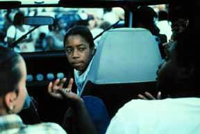
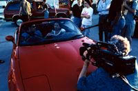
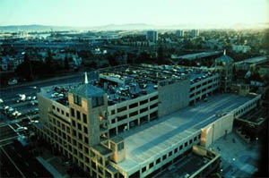
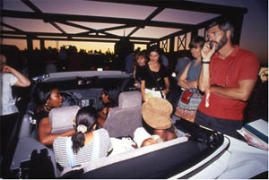
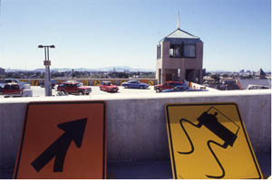

|
Special Feature: Latin America: The Last Avant-Garde |
| Number 12: (In)efficacy | |
| The Aesthetics
of Social Engagement: Suzanne Lacy’s The Roof Is On Fire |
|
|  (Unless otherwise noted, all illustrations are photographs of The Roof is on Fire.)
On June 9, 1994, 220 teenagers assembled in 100 cars on a rooftop garage in Oakland, CA. They came together to talk openly, with predetermined topics but no script, in front of “eavesdropping” audiences and cameras. These 100 simultaneous conversations addressed topics relevant to teens such as sex, violence and gender roles. The Roof is on Fire performance was the culminating event in a series of collaborative activities between artists Suzanne Lacy and Chris Johnson, artist/producer Annice Jacoby, public school teachers, and Oakland youth under the Acronym TEAM (Teens + Educators + Artists + Media Makers). Roof was also the first of a series of large-scale TEAM projects that took place between 1991-2000, including Youth, Cops, and Videotape, a video from a workshop that continues to be used in police training.[2] In her work with TEAM, Lacy hoped to empower youth, impact larger social policies, and challenge uses of mass media. Suzanne Lacy’s work is difficult to categorize. A project such as The Roof is on Fire could be considered visual art, performance art or film, but could just as easily be education, social work, or political intervention. The TEAM projects exemplify Lacy’s desire to contribute to the existing discourse of public art by creating, defining, and critiquing interdisciplinary new art forms. In “Cultural Pilgrimages and Metaphoric Journeys” (1993), Lacy defines her work as “new genre” public art, or “art that uses both traditional and nontraditional media to communicate and interact with a broad and diversified audience about issues directly relevant to their lives…based on engagement.”[3] Artists like Suzanne Lacy are considered pioneers in the field of public art because of their ability to address political subject matter through engaging the talents and voices of others. Lacy also uses mass media techniques and highly publicized venues to bring this art into a wider arena than that associated with previous community-based public art. In “Cultural Pilgrimages,” Lacy also addresses the problem of evaluating the impact of this genre of socially-engaged art, which many artists define in terms of a complex web of relationships rather than tangible artistic products. Lacy describes how “all art posits a space between the artist and the perceiver of the work, traditionally filled with the relationship between artist and audience…for some, [this] relationship is the artwork.”[4] When considering this type of art, must we identify and evaluate the types of relationships created rather than any one artistic “product?” In “An Unfashionable Audience” (1995), public art curator Mary Jane Jacob suggests that the effectiveness of art as an “instrument for social change” can be evaluated based on a series of different relationships: The first is “emblematic,” defined by the ability of artworks to relate to “the social problem…or by their presence in a public setting…inspire change.” The second is “supportive,” defined by the ability of the work to “ultimately feed back into an actual social system” or directly relate to other viable social services. The third is “participatory,” defined by the ability of the artwork to grow out of a collaborative process that involves complex relationships between artists, community participants, and audiences.[5] The Roof is on Fire is considered exemplary of all three relationships Jacob describes, in its ability to attack the social problem of the stereotyping of youth by the media; feed into a complex system of institutions that shaped youth education and policy; and engage those most affected by the project—the youth themselves—in its creation. Recent critiques of socially engaged public art, however, have identified two problematic aspects of this type of art (and the evaluation criteria posited by Jacob): its inability to produce real and lasting institutional change, and its rejection of conceptual or formal rigor in favor of the suggested social benefits it brings to nebulously defined “communities.” Patricia Phillips cites critic Miwon Kwon, among others, as “questioning this community-based work for its opportunistic involvement of individuals in order to produce work with little lasting significance for the community that it employs (or exploits).” According to Kwon,
In her 2002 seminal work on site-specific art, One Place After Another: Site Specific Art and Locational Identity, Kwon critically assesses a work of Suzanne Lacy’s, Full Circle, as an example of a “community of mythic unity” which highlights the presence of common beliefs or characteristics in a group of people, most often united by race, gender, or cause.[7] Kwon critiques “mythic unity” collaborations on the grounds that while they might involve the community in decision-making, the collaborators’ role is most often to “perform and signify the decentralization of the artist’s authority in defining the ‘content’” of the project. The act of “delegating authority” makes the artist herself an authority; thus these types of projects do not, in Kwon’s mind, break traditional boundaries between artist and community.[8] They also favor a “mythically” united “community” over personal narratives. For Lacy, however, it is important to retain a sense of herself as the “artist” in all of her projects; in “Cultural Pilgrimages” she explicitly states that she does not want to “discard the model of isolated authorship.”[9] As I will discuss later, while much of the project-planning in The Roof is on Fire involved a collaborative process between Lacy, co-artist Chris Johnson, artist/producer Annice Jacoby, and the youth and educators in TEAM, the idea of staging youth-led conversations on a rooftop grew out of Lacy’s original vision. Does the inventiveness of an individual artist contribute to a collaborative project’s social or educational impact, or does such artistic leadership detract from the decision-making and empowerment that participants can experience? Why is it important that such political advocacy projects be identified as works of art? Critic Claire Bishop implies that community-based projects are in danger of losing their artistic rigor if they are evaluated solely on their social impact:
If such works are to be evaluated as “art,” can they be discussed by traditional methods of art criticism that consider their visual and formal elements? To answer this question, In Conversation Pieces: Community + Communication in Modern Art (2004), Grant Kester defines a new aesthetic of dialogical art. Discussing projects such as Lacy’s works with TEAM, he attempts to qualify the discursive process behind such work, or as Jacob might define it, the relationships that it creates. Kester describes this new aesthetic as a rejection of both the concept of a finished work of art, and of an artist’s individual authorship. Instead, he describes dialogical art as a process in which the interactions that take place between artists and audiences are defined as the work of art itself:
In his final chapter, after discussing Suzanne Lacy’s TEAM projects, Kester admits that one of the things he has omitted from his discussion is “the visual dimension of these projects.”[12] It is certainly important to critique a work like Lacy’s in terms of the quality of the exchange between its artists, participants, and audiences and how they contribute to a larger framework of social change. I therefore do not reject Kester’s or Jacob’s idea of creating a discursive or relational aesthetic in order to characterize new genre public art projects. I will argue, however, that the artists or orchestrators of such projects do often devote a great deal of attention to traditional “physical or formal” qualities; Lacy’s tight aesthetic control over her works contributes to their social impact. Bishop suggests that there is value in a work of socially engaged art which, in the traditional Modernist sense, surprises audiences with unexpected images and ideas, and engages them through multiple points of contact. The Roof is on Fire can serve as one example of how art objects and formal structures of visual art and performance exist alongside and in fact complement and enable discourse and social action, both for the participants in the piece and for a larger audience of immediate and future viewers. While I will explore the types of social and institutional relationships fostered by Roof, I will also use it as an example of the role of “artful” elements in political action or community building strategies. I will argue that the complex formal qualities of such a work, including individual “objects,” play a vital role in creating a non-traditional space for dialogue, giving participants new tools to express themselves and providing a tangible way for current and future audiences to engage in a longer-term dialogic relationship with the piece. Finally, I will consider how The Roof is on Fire exemplifies a specific type of aesthetic that can be an integral component of socially-engaged, dialogue-based art. **********************
The Roof is on Fire has been characterized by Suzanne Lacy herself, co-organizer Annice Jacoby, and critics such as Kester as a multi-stage process rather than a singular cultural product, which at each juncture addressed problems facing inner city youth and the institutions that perpetuated these problems. Through acting as artists and participants in this process themselves, the teenagers involved in Roof were empowered to challenge these stereotypes. The Roof is on Fire was created as a direct response to the social and cultural climate of Oakland in the early 1990s. Yet unlike many works of political and public art that restrict themselves to very specific issues, Roof also challenged, on a large scale, social phenomena perceived by its organizers as significant national trends of the early 1990s: deep-seeded misperceptions of poor neighborhoods and youth of color perpetuated by the mass media. Oakland was a prime breeding ground for negative portrayals of youth in the media, altruistic desires to remedy the situation, and fascination with the culture and ideas of youth, in particular inner city youth. Lacy’s writings on TEAM in a later artist’s statement imply that she was drawn to its “history of political activism, diversity and culture…with a public school population of 55% African American, 20% Latino/a, 20% Asian American, and 5% European American students.”[14] Yet Oakland was also highly divided. In addition to its historically African-American demographic, the city was experiencing an influx of Mexican-American immigrants, and corresponding negative media campaigns directed against the two million illegal immigrants in the state of California.[15] Wealthier residents occupied the outlying Hills, geographically separated from areas of poverty. Lacy also recognized that Oakland’s youth, which comprised 25% of its population in 1990, were “beset with high rates of violent crime, poverty and school drop-out.”[16] The arrest rate among Oakland youth had increased by 35 percent during that decade.[17] The number of 15-to-19 year-old sexual assault victims had risen 26 percent between 1990 and 1991.[18] Statistics compiled in 1995 from a variety of sources, including the National Center for Health Statistics, Journal of the American Medical Association and the Office of the Attorney General of California, showed increasing youth violence in American culture and the state of California in particular: in 1990, 4,941 children in the U.S. under the age of 19 years died from gunshot wounds, with 538 of these children shot unintentionally. Homicide was the second leading cause of death among all young people ages 15 to 24, and the leading cause of death among young African American males. One-fifth of all murders of youth in the country occurred in California.[19] In addition to the shocking statistics being published, mass media coverage of young people emphasized the problem of youth violence. Most public knowledge of “inner-city” communities such as Oakland’s came from sensational media coverage of catastrophic events such as the 1991 Rodney King riots. A 1993 study by the Annenberg School of Communication at the University of Pennsylvania exposed the fact that minorities were being stereotyped on TV as violent, un-educated, and without ambition.[20] TEAM’s organizers believed that, particularly at this moment, it was difficult to challenge mainstream communication channels. According to project co-organizer Annice Jacoby, after 1990, television and news sources had become increasingly monopolized by large corporations. She describes the mass media at that time as a particularly “impenetrable fortress…mostly in the hands of the few who had control of television broadcasts and major newspapers.”[21] No group was more endangered by this trend than the teenagers themselves, and this decade also saw a rising awareness and concern with the influence of the media on the young and impressionable. A 1994 Department of Education study demonstrated that academic achievement dropped sharply in students who watched more than ten hours of television per week.[22] However, TEAM’s organizers perceived that most low-income youth in particular were not being taught at home or in school to critically analyze violent, racist, and sexist media stereotypes. Bombarded with negative stories being told about them by others and lacking educational and social resources with which to challenge these stereotypes, these youth were “at risk” of having no reason to believe that their own lives could follow an alternate course the one presented by the mass media. Besides being feared by the public, low-income youth were commonly lumped together as victims of a corrupt system, a sociological “problem” to be solved. In Oakland, local leaders focused on issues pertinent to urban youth. When TEAM was first conceived, Oakland was governed by Elihu Harris, an African-American mayor who earned the reputation of a “people’s champion” for his efforts to revitalize Oakland after a 1989 earthquake and a 1991 firestorm, as well as his support of innovative ways to address community issues. Harris had a particular interest in children and education, launching educational endeavors such as Camp Read-A-Lot and Project 2000, Ready to Learn.[23] Oakland had also recently become part of the first youth violence prevention advocacy program in the United States, Teens of Target (TNT), a project of Youth ALIVE. Through TNT, core groups of urban youth in Oakland and Los Angeles put together a training manual to help teach their peers leadership skills. The support of both government and community leaders would be essential to the success of Roof. Lacy describes Oakland as a “nationally recognized center for urban youth culture” and “the site of a developing public voice for youth…home to celebrities Danny Glover, M.C. Hammer, and Tony! Toni! Toné!”[24] Situated within this contradictory climate of both fear and well-intentioned outreach towards inner-city youth, Roof posed a challenging question: Has anyone sought to listen to what these teenagers themselves have to say about their lives? TEAM was founded on the belief that Oakland youth should have the chance to both deconstruct media stereotypes and express their individual voices and talents in mass media venues. This would ideally provide a powerful antidote to the mass media’s negative portrayals of the inner city and manipulation of teen audiences. To allow Oakland teenagers to tell their stories, Lacy and her collaborators had to function more as facilitators than artists, designing the means for others to express themselves. In order to make teens’ voices heard in mainstream arenas, the artists also had to act as educators and event-planners, and include diverse constituencies in the artistic process. Lacy and her team first sought to give youth the tools to deconstruct mass media messages. In 1991-2, Lacy and Chris Johnson collaborated with four teachers at Oakland Technical High School to create and teach a media literacy curriculum. Next, teenagers were empowered to address their own situation rather than rely on the well-intentioned efforts of outsiders. This empowerment took the form of dialogue-based performance art combined with leadership opportunities. After participating in the workshops for a year, the initial group of students from Oakland Technical staged Teen Age Living Room, a small performance sketch at California College of Arts and Crafts that provided the vision for The Roof is on Fire. The year after that project, Lacy and Johnson approached the school district and created, for a series of fifteen nominated faculty members from all eight public high schools, a class on media literacy. The weekly series of workshops, with special guests in education, sociology, and media, provided the teachers with a way to develop their own curriculum materials on these topics. Several of the fifteen teachers decided to work with the two artists the following semester on a performance, which would become The Roof is on Fire. Each of these faculty members selected a group of students from his or her classes and brought approximately forty of these leaders to weekly meetings after school.[25] From this group, fifteen students were elected for the Youth Steering Committee, which participated in all aspects of production and media coverage for the event. Other students served as recruiters.[26] Design, promotion, and content decisions were made collectively by the artists and this steering committee, making youth leadership an integral part of the work. This aspect of the project was not without controversy. As the performance date approached and tensions grew, some youth organizers, according to Lacy, “felt like the adults didn’t give them as much leadership as they wanted…[there were also controversies] between the youth as they struggled over what issues to address—homosexuality was quite loaded for example—and there was a struggle for the image, including whether the performance would take place in cars or on a bus.”[27] Perhaps the act of working through these issues in itself had value for the youth involved; Lacy’s careful assessment of this process suggests that she saw them as key decision-makers with respect to both content and design. Roof was conceived as a project which, unlike most educational collaborations, would have an impact in a larger public sphere beyond the classroom or even the schools. Suzanne Lacy’s particular background enabled her to advocate at high administrative levels as well as at the grassroots level in order to create a large-scale public arena where diverse viewpoints could be heard. As dean of the School of Fine Arts at the reputable California College of Arts and Crafts in Oakland, she had access to colleagues and students to help carry out the project. Collaborating artist Chris Johnson was a well-known photographer and also CCAC faculty. Lacy’s connections to Oakland’s top officials, including mayor Elihu Harris, helped her secure both the highly public venue of the rooftop parking garage, and access to mainstream news channels that would air the performance. Working closely with both teachers and government officials would eventually allow Lacy and TEAM to actively participate in crafting new youth-related policies, moving from discourse to concrete action. Roof was also distinguished from other youth/artist collaborations by its direct relationship to mass media. The final and perhaps most important principle behind Roof was that youth empowerment activities must receive as much media attention as portrayals of youth as criminals, victims, or entertainers. Thus publicizing the event was essential, and this involved artistic as well as practical decisions borrowed from traditions of both media documentation and popular advertising. The performance was aggressively advertised as free and open to the general public. Media specialist Annice Jacoby organized all aspects of promotion and news coverage. She worked with youth from the Leadership committee, teaching them how to approach the media, and working with them to create the poster slogan “Shut up and listen.” The Roof Is On Fire aired as a one-hour documentary by the Bay Area’s local NBC affiliate and was covered extensively on local and national news stations, even weeks after the event itself. However, instead of simply acting as a “service to the art,” the media became “the platform and medium itself.”[28] The orchestrators of Roof were not only ambitious in the scope of the audiences they wished to reach, but in the demands they made on these audiences. At the event, instead of a traditional theatrical set-up, cars contained different conversations taking place simultaneously. People accustomed to watching plays or concerts from their seats were challenged to wander from car to car, view the performance from several angles, and make choices about the messages they wished to absorb. Audiences also had to accept that there would be no universal conclusion at the end of the performance; each individual could potentially walk away with a slightly different narrative. However, while given the autonomy to selectively listen, audience members were not permitted to participate in the conversations or pose questions, the way they might at a symposium or panel discussion. The performance highlighted the importance of being an “audience” in the broadest sense of the word: the importance of listening. Without the safe distance from their audience associated with performing on stage, the youth “performers” also faced challenges. They spent weeks practicing speaking freely and ignoring audiences in simulated situations. Youth accustomed to being judged or talked back to by adults had to suspend traditional notions of their relationship to listeners.  The significance of this final performance was heightened by the fact that in June 1994, a youth “riot” occurred at the city’s annual summer festival, days before the Roof performance was slated to take place. According to the description of the media coverage of this event on Suzanne Lacy’s Web site,
The subsequent news coverage and documentary of Roof allowed audiences at this key moment to contrast the riot images with a very different picture of Oakland’s “offspring.” In the video, teens’ individual voices surface, especially youth who were interviewed extensively about their lives, such as Brandy Thomas, a sixteen-year-old single mother earning top grades in high school. After listening to Brandy we can no longer accept common assumptions that teen mothers have no hope of escaping a life on welfare. In this video youth are neither riotous criminals nor victims; they are ordinary people with ambitions who can converse intelligently about the world in which they live. **********************
In evaluating all of her work, Suzanne Lacy seeks to determine whether such collaborative, socially-charged events can act as catalysts for more widespread change. She has written about how this is extremely difficult to measure, partly because of the challenge of tracking audiences, or linking artistic causes to social effects. The evidence Lacy has collected to show the long-term impact of TEAM is mostly anecdotal and on the individual level: a recent phone call from a young woman who, now an adult, was a participant in Roof at age 15 and still remembers the project; the five past participants with whom Lacy is still in touch who are now pursuing graduate degrees or doing youth development work themselves.[31] In “Debated Territory: Toward a Critical Language for Public Art” (1995), Lacy suggests that “continuity” can be a “measure of both the artist’s responsibility and the work’s success.” She defines this as “sustaining or continuing a connection begun through the artwork as an expression of personal responsibility.”[32] In some cases continuity can merely involve the artist giving community leaders the tools to continue the work he or she has begun. It could be argued that Lacy was successful in achieving “continuity” with the Oakland community and therefore “success,” simply because she is still in contact with many of the original participants, and Roof and TEAM sparked a ten-year artistic collaboration that overlapped with fields such as public policy, youth/police relations, and education reform. This sense of commitment provides a model for new genre public art collaborations to offer more comprehensive and concrete solutions to social problems than the creation of the temporary, “mythically unified” community. Yet in “Finding Our Way to the Flag: Is Civic Discourse Art?”(2003), published a few years after the last TEAM project, Lacy claims that
Did Roof therefore fail to achieve its political advocacy goals? More quantitative research could track the number of people impacted and other changes in institutional data. Yet Lacy herself does not necessarily believe this type of evaluation is appropriate for her work, and instead suggests that because it is meant to be “art,” it must be measured according to more abstract criteria. She describes how
The absence of comprehensive empirical measurements of Roof’s impact on youth is in itself an argument for the importance of evaluating the formal, or “artistic” qualities of the work devised by the project’s organizers, and how they contributed to the multiple stages of the project. In “Finding Our Way to the Flag,” Lacy also states her belief that “it is of critical importance to the arts to locate these art practices within the trajectory of art history, to give real texture and meaning to the notion of artist citizenship and in doing so accomplish the reconstruction of the civic relevance of art.”[35] In a work that incorporates practices of radical education, mass media, and public advocacy and provokes new definitions of art and aesthetics, what formal or object-based components surface and what is their relevance to true “civic discourse?” To begin this discussion, it is best to look at the artists and art forms that Lacy and critics cite as influences for her work. While it would be impossible to show how these aesthetic elements contributed to social impact without establishing a clearer criteria for evaluating social impact itself, I will pose ideas about how the “artistic” decisions relate directly to the project’s sociopolitical goals. **********************
According to Moira Roth, “image is paramount in Lacy’s performances. Her overall design, theme and colors are always tightly controlled. The visual aspects of her performances are beautiful in the traditional artistic sense and unify their diverse elements.”[37] In all of her collaborative projects, Suzanne Lacy is concerned with specific formal structures that also “affect actual behavior.” In the case of Roof, the color and placement of the cars, the symbolic use of road signs, and the flow of bodies between vehicles were practical as well as symbolic decisions; like any stage manager or event-planner, Lacy had to consider how people can move through a space with minimal chaos. Lacy’s choice of the rooftop garage as a public venue was also visually symbolic; it forced audiences to look “up” to teenagers rather than looking down on them. Being on a rooftop also symbolized the fact that the youth participants were temporarily detached from, and looking reflectively down upon, the city streets that represented many of the issues in their lives.  Such decisions also symbolize Lacy’s desire to blur distinctions between art and everyday life. This concept has roots in the happenings and performance art of the 1950s and 60s, associated with, among others, artist and theorist Allan Kaprow. Lacy describes the relationship of new genre public art to happenings:
As with happenings, the source material for Roof was “everyday life”: the social situation of Oakland’s youth and the prevalence of mass media. Using this as the source material for art could call attention to, and challenge, these social trends. A work like Roof is aesthetically similar to a happening both in its relationship to popular culture and in its incorporation of simultaneous events or performances (in this case, the conversations in the different cars). Roof lacked what Michael Kirby refers to as “information structure,” or “all the elements needed for the presentation of a cause-and-effect plot or even the simple sequence of events that would tell a story.” [39] Youth were given prompts for their discussions in the cars, which were also “rehearsed” in classroom sessions prior to the final performance. Yet as in traditional happenings, each car in Roof also contained what Kirby refers to as “non-matrixed performance,” which rejects the idea of “an intentionally created and consciously possessed world” or invented story line.[40] As in a happening, the performance itself was not fixed but came into being as the event progressed. This allowed participants to have conversations that unfolded organically and related directly to their lives. It also gave the event’s audience a window into the “real lives” of teenagers. Lacy was inspired to infuse a social dimension into the framework of the happening by early feminist artists, such as Judy Chicago, who gathered the source material for their unscripted events not only from “everyday life” but from prevailing political issues. Chicago’s Womanhouse (1971) invited different women to create individual rooms of a house that each expressed an issue relating to women’s confinement in the home. Lacy’s aesthetic of nonmatrixed performance gave the participants’ narratives a credibility they might otherwise lack. In order to allow many conversations to take place at one time in Roof, she also drew from the “compartmentalized structure” found in happenings, “based on the arrangement and contiguity of theatrical units that are completely self-contained and hermetic. No information is passed from one discrete theatrical unit—or ‘compartment’ to another.”[41] Each car on the rooftop can be considered a “self-contained” compartment. The compartmentalized structure enables complex conversations to exist within a larger symbolic visual frame, and has been used in many of Lacy’s other projects. Her 1985-1987 Crystal Quilt, for example, featured simultaneous conversations between elderly women sitting at tables. Arranged by Miriam Shapiro, the tables together created a patchwork quilt pattern, a tribute to collaborative women’s work. This was intended to help the women and outside viewers perceive the individual conversations as part of a larger feminist movement. The organizers of Roof hoped that youth participants would feel ownership over their individual conversations while also considering how these conversations related to a greater social framework. The goal of the TEAM projects was largely to, as Kester aptly states, encourage people normally pitted against one another, such as youth from different neighborhoods, or youth and police officers, to perceive each other “not as abstractions, but as specific individuals.”[42] One of the challenges for collaborative artists is designing projects that empower individual participants to tell their stories, yet still contain powerful, unifying narratives or visual statements. Within a less lucid formal framework, the stories of specific individuals in Roof might have been lost, if not to the participants then to the audience attending the event.
Their status as physical components of a work of visual art, or “living painting,” may also have helped participants engage freely in dialogue. Jennifer Fisher has compared Lacy’s work to the tableaux vivant of the nineteenth century, in which human participants staged scenes from paintings or sculptures. Fisher discusses how in contemporary performance art, methods of tableaux vivant are used to create “zones of interperformance by which the terrain of fixed representation is transformed.” These tableaux contain what Fisher calls the “aesthetics of becoming,” or the imitative learning of social traits through mime and performance. In the nineteenth century tableaux vivant, Victorian women staged conventions of social etiquette. These living pictures at the turn of the century evolved into public performances and street theater in which immigrants were “socialized” in acts of “individual and collective social transformation.”[43] Fisher compares these tableaux vivant to Lacy’s staged feminist performances which “[addressed] the ‘absence’ of women through the framing of situations that assert their ‘presence.’” These performances “frame situations and shape connective activity to effect what she has called ‘sculptures in dialogue.’”[44]  In Roof, “tableaux” of teenagers in cars created a means by which young people could practice being heard in a large-scale venue, in effect, “performing” the customs of speaking about the issues that mattered to them. This was meant to promote “individual and collective social transformation.” Speaking as part of a visual tableau was perhaps considered less threatening for participants than speaking at a traditional forum on youth issues that did not have the symbolic detachment of a “work of art.” Rather than participating in a series of dialogues confined to a classroom, or even a series of educational videos, the participants in Roof were part of a large and highly visible live statement whose symbolism borrowed directly from a youth culture associated with consumerism, street life, and peer relationships (all symbolized by groups of young people in cars). This situation asserted the “presence” of individual adolescents in a society accustomed to dismissing or stereotyping them, and asserted their ability to function as a self-contained community (or living tableau) which they themselves had created and produced independently of mainstream media. The relationship of the project’s visual symbolism to popular culture also may have contributed to its ability to engage youth. In her review of Lacy’s 1999 TEAM performance between youth and police officers, Code 33: Clear the Air, Megan Wilson discusses its “theatrical display with its incredibly detailed and contrived choreography—the roles, the uniforms, the colors, the music, the helicopter, the synchronized dance…” she also describes a poster advertising the event that referenced MTV, comparing the event to “an early prototype for the current reality show craze.” Wilson asks,
Wilson’s assessment implies that Lacy’s youth–oriented performances contain elements of pageantry, hype, and pop-cultural symbolism that help attract both participants and audiences, especially if they perceive themselves as actors in a television show rather than the players in a high-stakes real life scenario. The Roof is on Fire was more modest than some of Lacy’s later TEAM performances like Code 33, which featured costumed dance performances. Yet it established the tradition of borrowing from conventions of popular sensational news broadcasts and sound bites, as well as the materialism associated with contemporary youth culture (colorful cars, fancy AV equipment and posters, and directional road signs, a product of the artists’ trip to Oakland’s sign factory, lent the modest rooftop garage a kitsch reference to the American road trip). In Conversation Pieces, Grant Kester rejects evaluating collaborative artworks by a “formal, pleasure-based methodology that cannot value, or even recognize, the communicative interactions that these artists find so important…because the critic gains no sensory stimulation or fails to find the work visually engaging, it is dismissed as failed art.”[46] Wilson, Fisher, and Roth, however, clearly see the “sensory stimulation” in Lacy’s work as essential to engaging youth participants, attracting viewers, and ensuring that the audience fully grasps the connection between the project and the conventions it aims to challenge. While incorporating imagery and content from everyday life, the symbolic and aesthetic frame of Roof provided a space where participants and audiences could “see” and experience relevant issues in a new way. It disrupted people’s day to day lives to pinpoint the specific experiences of young people, and zoom in on the ability of these young people to address their own problems through dialogue and creative action. This tradition of altering the conventions of mass media and popular culture through imagery and performance can be seen in the work of artists and collectives like Barbara Kruger or the Adbusters Media Foundation. These artists appropriate and alter mass media forms to subvert their pervasive messages. Roof restructured a scene typically used to depict youth negatively (teenagers hanging out in cars or on street corners, up to no good). This symbolism was heightened by the coincidental juxtaposition between Roof’s performance and the especially chilling scene of teenagers on the evening news days before. An even more striking example of the use of altered media objects within the Roof project were the posters that advertised the event, including billboards erected along major freeways, which contained some of the same prompts used to start the teenagers’ conversations in the cars. These billboards were intended to spark a dialogue about the themes of Roof prior to its actual performance and provide alternative messages in the urban environment from consumerist advertisements.  The resulting documentary video about the event can also be viewed as an art object that employed formal documentary film techniques to both highlight the individual stories of youth, and provide a lasting alternative narrative to typical news broadcasts. It can still be used to disseminate both the content and methods of the Roof project to future audiences and educators, along with the curricular materials used in the teen workshops. This tangible documentation of the project allowed Roof to continue to serve as a teaching tool and undoubtedly help spark the other TEAM collaborations that followed. I have already mentioned the video created through the subsequent TEAM project, Youth, Cops, and Videotape that was later used in police training. We cannot underemphasize the practical importance of the multiple visual objects produced through these projects in aiding the educational and institutional exchanges that took place. **********************
While it is important to assess a project like The Roof is on Fire in terms of the quality of exchange between its participants and its relationship to a larger social context, it is also valuable to recognize the aesthetic or artistic elements of the piece and how they helped create the conditions in which these relationships could take place. In contrast to the dialogical aesthetic he proposes, Grant Kester describes how,
Roof was successful largely because of its potential to create such epiphany, for both the viewers of the event and its documentary and the participants who were lifted out of their normal “sense of self.” Kester describes how in a work such as Roof, such an attitude shift occurs through social exchanges rather than physical stimuli. Kester associates more sensory aesthetic experience with disinterested isolation rather than the consensus building so important to achieving the social impact of dialogical public art. Yet it is important to consider the many ways in which Roof’s organizers used sensory experiences to initially inspire people to take part in the dialogues or even listen: the billboards and posters, the spectacle of elaborately placed cars and teenagers milling around a rooftop, even the soundtrack of the documentary. Kester is correct in recognizing the importance of the ongoing, gradual process of transformation in dialogical art but the importance of epiphany in sparking the dialogues cannot be overlooked. Similarly, a powerful visual art object or performance may initially strike a viewer and inspire a more prolonged thought process. This sustained “dialogue” with a work of art or an artist usually occurs because of the presence of nuances and contradictions rather than consensus. As Claire Bishop describes,
Bishop’s aesthetic criteria for socially-engaged art is an aesthetic of both epiphany and complexity. Lacy’s work operates on deeper levels than the shock value of large-scale “interventions” in urban life or the alteration of mass media; she is able to incorporate multiple narratives into a work like Roof without sacrificing its overall symbolic impact. The unusual juxtaposition of a municipal rooftop garage and teenagers in cars, the harsh content of some of their life stories, and the provocative nature of some the ads for the event may have been shocking, but they held together in a more harmonious image. More importantly, to this day they symbolize the fact that the participating youth were able to come together as a self-contained community to realize the project. Lacy has found a way to incorporate long-term exploration of social issues, including disagreement and debate, into projects that retain their aesthetic integrity and symbolize, as well as allow, the empowerment of the participants who create them. Perhaps this is why Lacy herself says,
While it may be presumptuous to assume that one work of socially-engaged, collaborative public art can radically change prevailing cultural attitudes or the lives of a large number of participants, it can add to an archive of ideas about how art can respond to and challenge a sociopolitical problem, and how artists can overcome traditional notions of cultural object, producer, and audience to create thought-provoking new art forms. It may be best to consider The Roof is on Fire mainly in terms of its impact on the field of public art. According to Jacoby, in terms of both its social content and methodology, The Roof is on Fire was very much a product of its time, designed to give youth a voice in the mass media when the definition of “mass media” did not yet include the “more democratic and accessible Internet.”[51] Yet Roof can continue to serve as an example of how collaborative artists can design projects that operate on multiple levels (engaging participants, contemporary audiences, and future audiences) and incorporate more traditional definitions of “art” and aesthetic and sensory stimulation in order to do so. In the words of Suzanne Lacy, this type of new genre public art “might be a model for artists themselves, stretching the boundaries, incorporating new forms, [and] giving permission for invention.”[52]
Katherine Gressel graduated from Yale in 2003 with a B.A. in painting, and has a strong interest in community-based public art. She has led youth mural projects with Community-Word Project and Groundswell Community Mural Project in New York, and Precita Eyes Muralists in San Francisco. Katherine has worked as a museum educator at the Brooklyn Museum and is an active founding member and art educator in several startup youth arts nonprofits. As an Assistant Editor of With and Without Permission, an upcoming book on the murals of San Francisco's Mission District, she has written and edited essays about contemporary murals and street art. She is currently pursuing a Masters degree in Arts Administration from Teachers College/Columbia University, where she is writing her thesis on the educational impact of permanent public art.
Endnotes [1] Suzanne Lacy, “Project Description: The
Roof is on Fire,” Suzanne Lacy: Artist Resource Website
(www.suzannelacy.com). |